COMPACT SPACES
The notion of a compact topological space is (like every concept studied in this book) an abstraction of certain important properties of the set of real numbers. The classic theorem of Heine-Borel-Lebesgue asserts that every open cover of a closed and bounded subset of the space of real numbers has a finite subcover. This theorem has extraordinarily profound consequences, and, like most good theorems, its conclusion has become a definition. A topological space is compact (bicompact) if and only if each open cover has a finite subcover.* A subset A of a topological space is compact iff it is, with the relative topology, compact; equivalently A is compact iff every cover of A by sets which are open in X has a finite subcover.
EQUIVALENCES
This section is devoted to characterizations of compactness in terms of closed sets, convergence, bases, and subbases.
A family  of sets has the finite intersection property iff the intersection of the members of each finite subfamily of
of sets has the finite intersection property iff the intersection of the members of each finite subfamily of  is non-void. The De Morgan formulae (0.2) on complements furnish the connection between this notion and the concept of compactness.
is non-void. The De Morgan formulae (0.2) on complements furnish the connection between this notion and the concept of compactness.
1 THEOREM A topological space is compact if and only if each family of closed sets which has the finite intersection property has a non-void intersection.
PROOF If  is a family of subsets of a topological space X, then, according to the De Morgan formulae, 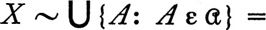 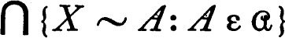 and hence
is a family of subsets of a topological space X, then, according to the De Morgan formulae, 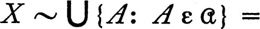 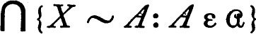 and hence  is a cover of X iff the intersection of the complements of the members of
is a cover of X iff the intersection of the complements of the members of  is void. The space X is compact iff each family of open sets, such that no finite subfamily covers X, fails to be a cover, and this is true iff each family of closed sets which possesses the finite intersection property has a non-void intersection. ∎
is void. The space X is compact iff each family of open sets, such that no finite subfamily covers X, fails to be a cover, and this is true iff each family of closed sets which possesses the finite intersection property has a non-void intersection. ∎
2 THEOREM A topological space X is compact if and only if each net in X has a cluster point.
Consequently , X is compact if and only if each net in X has a subnet which converges to some point of X.
PROOF Let {Sn, n ε D} be a net in the compact topological space X and for each n in D let An be the set of all points Sm for m ≧ n. Then the family of all sets An has the finite intersection property because D is directed by ≧, and consequently the family of all closures An– also has the finite intersection property. Since X is compact there is a point s which belongs to each An–, and according to theorem 2.7 such a point s is a cluster point of the net {Sn, n ε D}. To prove the converse proposition let X be a topological space in which every net has a cluster point and let  be a family of closed subsets of X such that
be a family of closed subsets of X such that  has the finite intersection property. Define
has the finite intersection property. Define  to be the family of all finite intersections of members of
to be the family of all finite intersections of members of  ; then
; then  has the finite intersection property and since 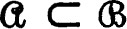 it is sufficient to show 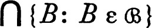 non-void. The intersection of two members of
has the finite intersection property and since 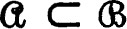 it is sufficient to show 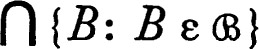 non-void. The intersection of two members of  is a member of
is a member of  and therefore
and therefore  is directed by ⊂. If we choose a member SB from each B in
is directed by ⊂. If we choose a member SB from each B in  , then 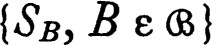 is a net in X and consequently has a cluster point s. If B and C are members of
, then 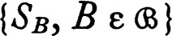 is a net in X and consequently has a cluster point s. If B and C are members of  such that C ⊂ B, then Sc ε C ⊂ B; therefore the net is eventually in the closed set B and hence the cluster point s belongs to B. Therefore s belongs to each member of
such that C ⊂ B, then Sc ε C ⊂ B; therefore the net is eventually in the closed set B and hence the cluster point s belongs to B. Therefore s belongs to each member of  and the intersection of the members of
and the intersection of the members of  is non-void. Finally, the second statement of the theorem follows from the fact (2.6) that a point is a cluster point of a net iff some subnet converges to it. ∎
is non-void. Finally, the second statement of the theorem follows from the fact (2.6) that a point is a cluster point of a net iff some subnet converges to it. ∎
Under certain circumstances compactness can be characterized in terms of the existence of accumulation points of subsets. The following sequence of lemmas and the subsequent theorem indicate the situation. The problems at the end of the chapter show that the limitations imposed are necessary. It is convenient to use a variant of the notion of accumulation point in stating the results. A point x is an ω-accumulation point of a set A iff each neighborhood of x contains infinitely many points of A. Each ω-accumulation point of a set is also an accumulation point, and if the space is T1 the converse holds.
3 LEMMA Every sequence in a topological space has a cluster point if and only if every infinite set has an ω-accumulation point.
PROOF Suppose that every sequence has a cluster point and that A is an infinite subset. Then there is a sequence of distinct points (a one-to-one sequence) in A, and each cluster point of such a sequence is clearly an ω-accumulation point of A. Conversely, if every infinite subset of a topological space has an accumulation point and {Sn, n ε ω} is a sequence in the space, then one of two situations must occur. Either the range of the sequence is infinite, in which case each ω-accumulation point of this infinite set is a cluster point of the sequence, or else the range of the sequence is finite. In the latter case, for some point x of the space, Sn = x for infinitely many non-negative integers n, and x is a cluster point of the sequence. ∎
4 LEMMA If X is a Lindelöf space and every sequence in X has a cluster point, then X is compact.
PROOF It must be shown that each open cover of X has a finite subcover. Because of the hypothesis it may be assumed that the open cover consists of sets A0, A1, …, An …, for n in ω. Proceeding inductively, let B0 = A0 and for each p in ω let Bp be the first of the sequence of A’s which is not covered by B0 ∪ B1 ∪ … ∪ Bp–1. If this choice is impossible at any stage, then the sets already selected are the required finite subcover. Otherwise it is possible to select a point bp in Bp for each p in ω such that 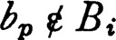 for i < p. Let x be a cluster point of this sequence. Then x ε Bp for some p, and since x is a cluster point, bq ε Bp for some q > p. But this is a contradiction. ∎
The following theorem summarizes information on sequences and subsequences, accumulation points and compactness.
5 THEOREM If X is a topological space, then the conditions below are related as follows. For all spaces (a) is equivalent to (b) and (d) implies (a). If X satisfies the first axiom of countability, then (a), (b), and (c) are equivalent. If X satisfies the second axiom of countability, then all four conditions are equivalent. If X is pseudo-metric, then each of the four conditions implies that X satisfies the second countability axiom and all four are equivalent.
(a)Every infinite subset of X has an ω-accumulation point.
(b)Every sequence in X has a cluster point.
(c)For each sequence in X there is a subsequence converging to a point of X.
(d)The space X is compact.
PROOF Lemma 5.3 states that (a) is equivalent to (b) and since a sequence is a net, 5.2 shows that (d) always implies (b). If X satisfies the first axiom of countability then (b) and (c) are equivalent by 2.8. If X satisfies the second axiom of countability, then every open cover has a countable subcover, lemma 5.4 applies, and hence all four statements are equivalent. If X is pseudo-metric, then X satisfies the first axiom of countability, the first three conditions are equivalent, each is implied by compactness, and the theorem will be proved if it is shown that a pseudo-metric space such that each infinite subset has an accumulation point is separable and hence satisfies the second axiom of countability. Suppose that X is such a pseudo-metric space. For r positive consider the family of all sets A such that the distance between any two distinct points of A is at least r. It is easily seen that this family has a maximal member Ar by 0.25. The set Ar must be finite, for the r/2 sphere about each point of X contains at most one member of Ar and therefore Ar has no accumulation point. Moreover, the r-sphere about each point x of X must intersect Ar because Ar is maximal and otherwise x could be adjoined to Ar. Finally the union A of sets Ar, for r the reciprocal of a positive integer, is surely countable and A is clearly dense in X. ∎
If  is a base for the topology of a compact space X and
is a base for the topology of a compact space X and  is a cover of X by members of
is a cover of X by members of  , then there is a finite subcover of
, then there is a finite subcover of  . Conversely, suppose that
. Conversely, suppose that  is a base for the topology and that every cover by members of
is a base for the topology and that every cover by members of  has a finite subcover. If
has a finite subcover. If  is an arbitrary open cover of X define
is an arbitrary open cover of X define  to be the family of all members of
to be the family of all members of  which are subsets of some member of
which are subsets of some member of  . Because
. Because  is a base, the family
is a base, the family  is a cover of X, and consequently there is a finite subcover 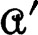 of
is a cover of X, and consequently there is a finite subcover 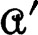 of  . For each member of we may select a member of
. For each member of we may select a member of  which contains it, and the result is a finite subcover of
which contains it, and the result is a finite subcover of  . This shows that, if “a base for a topology is compact,” then the space is compact. This is a useful but not a very profound result. The corresponding theorem on sub-bases is both profound and useful.
. This shows that, if “a base for a topology is compact,” then the space is compact. This is a useful but not a very profound result. The corresponding theorem on sub-bases is both profound and useful.
6 THEOREM (ALEXANDER) If  is a subbase for the topology of a space X such that every cover of X by members of
is a subbase for the topology of a space X such that every cover of X by members of  has a finite subcover, then X is compact.
has a finite subcover, then X is compact.
PROOF For brevity let us agree that a family of subsets of X is inadequate iff it fails to cover X, and is finitely inadequate iff no finite subfamily covers X. Then the definition of compactness of X can be stated: each finitely inadequate family of open sets is inadequate. Observe that the class of finitely inadequate families of open sets is of finite character and therefore each finitely inadequate family is contained in a maximal family by Tukey’s lemma 0.25(c). Such a maximal finitely inadequate family  has a special property which is established as follows.* If 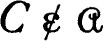 and C is open, then by maximality there is a finite subfamily A1, … Am of
has a special property which is established as follows.* If 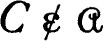 and C is open, then by maximality there is a finite subfamily A1, … Am of  such that C ∪ A1 ∪ … Am = X. Hence no open set containing C belongs to
such that C ∪ A1 ∪ … Am = X. Hence no open set containing C belongs to  . If D is another open set and 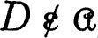, then there is B1, …, Bn in
. If D is another open set and 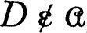, then there is B1, …, Bn in  such that D ∪ B1 ∪…∪ Bn = X and (C ∩ D) ∪ A1 ∪ … ∪ Am ∪ B1 ∪ … ∪ Bn = X by a simple set theoretic calculation. It follows that 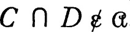. Consequently, if no member of a finite family of open sets belongs to
such that D ∪ B1 ∪…∪ Bn = X and (C ∩ D) ∪ A1 ∪ … ∪ Am ∪ B1 ∪ … ∪ Bn = X by a simple set theoretic calculation. It follows that 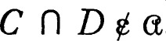. Consequently, if no member of a finite family of open sets belongs to  , then no open set containing the intersection belongs to
, then no open set containing the intersection belongs to  ; restated, if a member of
; restated, if a member of  contains a finite intersection C1 ∩ C2 … ∩ Cp of open sets, then some Ci ε
contains a finite intersection C1 ∩ C2 … ∩ Cp of open sets, then some Ci ε  .
.
The proof of the theorem is now straightforward. Suppose that  is a subbase such that each open cover by subbase elements has a finite subcover (that is, each finitely inadequate subfamily is inadequate) and suppose that
is a subbase such that each open cover by subbase elements has a finite subcover (that is, each finitely inadequate subfamily is inadequate) and suppose that  is a finitely inadequate family of open subsets of
is a finitely inadequate family of open subsets of  . Then there is a maximal family
. Then there is a maximal family  of this sort containing
of this sort containing  and it is sufficient to show that
and it is sufficient to show that  is inadequate. The family 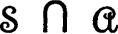 of all members of
is inadequate. The family 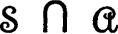 of all members of  which belong to
which belong to  is finitely inadequate and hence does not cover X. Consequently the theorem will be proved if it is shown that each point in 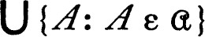 belongs to 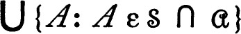. Because
is finitely inadequate and hence does not cover X. Consequently the theorem will be proved if it is shown that each point in 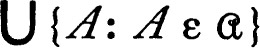 belongs to 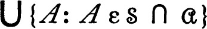. Because  is a sub-base each point x of a member A of
is a sub-base each point x of a member A of  belongs to some finite intersection of members of
belongs to some finite intersection of members of  which is contained in A. The paragraph above shows that some one of this finite family belongs to
which is contained in A. The paragraph above shows that some one of this finite family belongs to  , hence
, hence  , and the theorem is proved. ∎
, and the theorem is proved. ∎
COMPACTNESS AND SEPARATION PROPERTIES
In this section the consequences of compactness in conjunction with the so-called separation axioms will be examined. In each case the theorem proved is the assumed separation axiom (Hausdorff, regular, completely regular) with the word “point” replaced by “compact set.” A simple but important corollary on continuous mappings of compact spaces into Hausdorff spaces is derived, and finally we prove a separation theorem of A. D. Wallace which includes most of the earlier theorems.
It is always true that a closed subset A of a compact space X is compact, for each net in A has a subnet which converges to a point which belongs to A because A is closed. (A proof based directly on the definition of compactness is almost as simple.) The converse theorem is false, for if A is a proper non-void subset of an indiscrete space X (only X and the void set are open), then A is surely compact but not closed. This cannot happen if X is a Hausdorff space.
7 THEOREM If A is a compact subset of a Hausdorff space X and x is a point of X ~ A, then there are disjoint neighborhoods of x and of A.
Consequently each compact subset of a Hausdorff space is closed.
PROOF Since X is Hausdorff there is a neighborhood U of each point y of A such that x does not belong to the closure U–. Because A is compact there is a finite family U0, U1, …, Un of open sets covering A such that 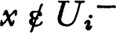 for i = 0, 1, …, n. If 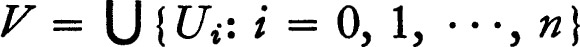, then A ⊂ V and x t V–. Consequently X ~ V– and V are disjoint neighborhoods of x and A. ∎
8 THEOREM Let f be a continuous function carrying the compact topological space X onto the topological space Y. Then Y is compact, and if Y is Hausdorff and f is one to one then f is a homeomorphism.
PROOF If  is an open cover of Y, then the family of all sets of the form f–1[A], for A in
is an open cover of Y, then the family of all sets of the form f–1[A], for A in  , is an open cover of X which has a finite subcover. The family of images of members of the sub-cover is a finite subfamily of
, is an open cover of X which has a finite subcover. The family of images of members of the sub-cover is a finite subfamily of  which covers Y and consequently Y is compact. Suppose that Y is Hausdorff and f is one to one. If A is a closed subset of X, then A is compact and hence its image f[A] is compact and therefore closed. Then (f–1)–1[A] is closed for each closed set A and f–1 is continuous. ∎
which covers Y and consequently Y is compact. Suppose that Y is Hausdorff and f is one to one. If A is a closed subset of X, then A is compact and hence its image f[A] is compact and therefore closed. Then (f–1)–1[A] is closed for each closed set A and f–1 is continuous. ∎
9 THEOREM If A and B are disjoint compact subsets of a Hausdorff space X, then there are disjoint neighborhoods of A and B.
Consequently each compact Hausdorff space is normal.
PROOF For each x in A there is by 5.7 a neighborhood of x and a neighborhood of B which are disjoint. Consequently there is a neighborhood U of x whose closure is disjoint from B, and since A is compact there is a finite family U0, U1, …, Un such that Ui– is disjoint from B for i = 0, 1, …, n and 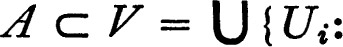 i = 0, 1, …, n). Then V is a neighborhood of A and X ~ V– is a neighborhood of B which is disjoint from V. ∎
10 THEOREM If X is a regular topological space, A a compact subset, and U a neighborhood of A, then there is a closed neighborhood V of A such that V ⊂ U.
Consequently each compact regular space is normal.
PROOF Because X is regular, for each x in A there is an open neighborhood W of x such that W– ⊂ U, and by compactness there is a finite open cover W0, W1, …, Wn of A such that Wi– ⊂ U for each i. Then 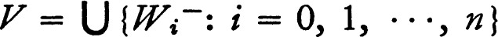 is the required neighborhood of A. ∎
11 THEOREM If X is a completely regular space, A is a compact subset and U is a neighborhood of A, then there is a continuous function f on X to the closed interval [0,1] such that f is one on A and zero on X ~ U.
PROOF For each x in A there is a continuous function g which is one at x and zero on X ~ U. The set {y : g(y) > ½} is open in X and hence if h is defined by h(y) = min [2g(y),1], then h is continuous, has values in [0,1], is zero on X ~ U, and is one on a neighborhood of x. Because A is compact there is a finite family h0, h1, … hn of continuous functions on X to [0,1] such that A ⊂ ∪ {hi–1[1]: i = 0, 1, …,n} and each hi is zero on X ~ U. The function f whose value at x is max {hi(x): i = 0, 1, …, n) is the required function. ∎
Each of the last two theorems has a formulation which is superficially different; the statement “A is compact and U a neighborhood of A” can be replaced by “if A is compact and B is a disjoint closed set,” and the conclusion changed in the obvious way.
Most of the results of this section are easy consequences of the following theorem.
12 THEOREM (WALLACE) If X and Y are topological spaces, A and B are compact subsets of X and Y respectively, and W is a neighborhood of A × B in the product space X × Y, then there are neighborhoods U of A and V of B such that U × V ⊂ W.
PROOF For each member (x,y) of A × B there are open neighborhoods R of x and S of y such that R × S ⊂ W. Since B is compact, for a fixed x in A there are neighborhoods Ri of x and corresponding open sets Si, for i = 0, 1, … n, such that 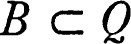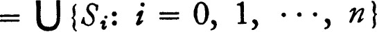. If 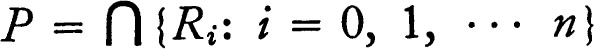, then P is a neighborhood of x and Q is a neighborhood of B such that P × Q ⊂ W. Since A is compact there are open sets Pi in X and Qi in Y, for i = 0, 1, … m, such that each Qi is a neighborhood of B, Pi × Qi ⊂ W, and 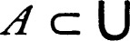 {Pi: i = 0, 1, … m} = U. Then U and 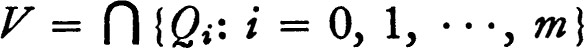 {Qi: i = 0, 1, …, m} are neighborhoods of A and B respectively, U × V is a subset of W, and the theorem follows. ∎
PRODUCTS OF COMPACT SPACES
The classical theorem of Tychonoff on the product of compact spaces is unquestionably the most useful theorem on compactness. It is probably the most important single theorem of general topology. This section is devoted to the Tychonoff theorem and a few of its consequences.
13 THEOREM (TYCHONOFF) The cartesian product of a collection of compact topological spaces is compact relative to the product topology.
PROOF Let 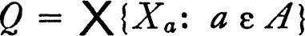 where each Xa is a compact topological space and Q has the product topology. Let  be the subbase for the product topology consisting of all sets of the form Pa–1[U] where Pa is the projection into the a-th coordinate space and U is open in Xa. In view of theorem 5.6 the space Q will be compact if each subfamily
be the subbase for the product topology consisting of all sets of the form Pa–1[U] where Pa is the projection into the a-th coordinate space and U is open in Xa. In view of theorem 5.6 the space Q will be compact if each subfamily  of
of  , such that no finite subfamily of
, such that no finite subfamily of  covers Q, fails to cover Q. For each index a let 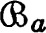 be the family of all open sets U in Xa such that Pa–1[U] ε
covers Q, fails to cover Q. For each index a let 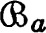 be the family of all open sets U in Xa such that Pa–1[U] ε  . Then no finite subfamily of covers Xa and hence by compactness there is a point xa such that xa ε Xa ~ U for each U in . The point x whose a-th coordinate is xa then belongs to no member of
. Then no finite subfamily of covers Xa and hence by compactness there is a point xa such that xa ε Xa ~ U for each U in . The point x whose a-th coordinate is xa then belongs to no member of  and consequently
and consequently  is not a cover. ∎
is not a cover. ∎
We give an alternate proof of Tychonoff’s theorem which does not depend on the Alexander theorem 5.6.
ALTERNATE PROOF (BOURBAKI) It will be proved that if  is a family of subsets of the product and
is a family of subsets of the product and  has the finite intersection property, then 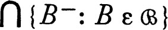 is not void. The class of all families which possess the finite intersection property is of finite character and consequently we may assume that
has the finite intersection property, then 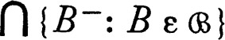 is not void. The class of all families which possess the finite intersection property is of finite character and consequently we may assume that  is maximal with respect to this property by Tukey’s lemma 0.25(c). Because
is maximal with respect to this property by Tukey’s lemma 0.25(c). Because  is maximal each set which contains a member of
is maximal each set which contains a member of  belongs to
belongs to  and the intersection of two members of
and the intersection of two members of  belongs to
belongs to  . Moreover, if C intersects each member of
. Moreover, if C intersects each member of  , then C ε
, then C ε  by maximality.* Finally, the family of projections of members of
by maximality.* Finally, the family of projections of members of  into a coordinate space Xa has the finite intersection property and it is therefore possible to choose a point xa in 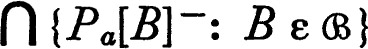. The point x whose a-th coordinate is xa then has the property: each neighborhood U of xa intersects Pa[B] for every B in
into a coordinate space Xa has the finite intersection property and it is therefore possible to choose a point xa in 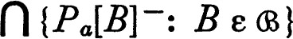. The point x whose a-th coordinate is xa then has the property: each neighborhood U of xa intersects Pa[B] for every B in  , or equivalen tly Pa–1[U] ε
, or equivalen tly Pa–1[U] ε  , for each neighborhood U of xa in Xa. Therefore finite intersections of sets of this form belong to
, for each neighborhood U of xa in Xa. Therefore finite intersections of sets of this form belong to  . Then each neighborhood of x which belongs to the defining base for the product topology belongs to
. Then each neighborhood of x which belongs to the defining base for the product topology belongs to  and hence intersects each member of
and hence intersects each member of  . Therefore x belongs to B– for each B in
. Therefore x belongs to B– for each B in  , and the theorem is proved. ∎
, and the theorem is proved. ∎
Several important applications of Tychonoff’s theorem occur in the chapter on function spaces; for the moment we consider a very simple consequence. A subset of a pseudo-metric space is bounded iff it is of finite diameter. Thus a subset of the space of real numbers is bounded iff it has both an upper and lower bound. The following is the classical theorem of Heine-Borel-Lebesgue.
14 THEOREM A subset of Euclidean n-space is compact if and only if it is closed and bounded.
PROOF Let A be a compact subset of En. Then A is closed because En is a Hausdorff space. Because of compactness A can be covered by a finite family of open spheres of radius one, and because each of these is bounded A is bounded. To prove the converse suppose that A is a closed and bounded subset of En. Let Bi be the image of A under the projection into the i-th coordinate space, and notice that each Bi is bounded because the projection decreases distances. Then 
 , and this set is a subset of a product of closed bounded intervals of real numbers. Since A is a closed subset of the product, and the product of compact spaces is compact, the proof reduces to showing that a closed interval [a,b] is compact relative to the usual topology. Let
, and this set is a subset of a product of closed bounded intervals of real numbers. Since A is a closed subset of the product, and the product of compact spaces is compact, the proof reduces to showing that a closed interval [a,b] is compact relative to the usual topology. Let  be an open cover of [a,b] and let c be the supremum of all members x of [a, b] such that some finite subfamily of
be an open cover of [a,b] and let c be the supremum of all members x of [a, b] such that some finite subfamily of  covers [a,x]. (The set is not void because a is a member.) Choose U in
covers [a,x]. (The set is not void because a is a member.) Choose U in  such that c ε U, and choose a member d of the open interval (a,c) such that [d,c] ⊂ U. There is a finite subfamily of
such that c ε U, and choose a member d of the open interval (a,c) such that [d,c] ⊂ U. There is a finite subfamily of  which covers [a,d], and this family with U adjoined covers [a,c]. Unless c = b the same finite subfamily covers an interval to the right of c, which contradicts the choice of c. The theorem follows. ∎
which covers [a,d], and this family with U adjoined covers [a,c]. Unless c = b the same finite subfamily covers an interval to the right of c, which contradicts the choice of c. The theorem follows. ∎
The closed unit interval is compact and consequently each cube (the product of closed unit intervals) is compact. The following characterization of Tychonoff spaces (completely regular T1-spaces) is then almost self-evident.
15 THEOREM A topological space is a Tychonoff space if and only if it is homeomorphic to a subspace of a compact Hausdorff space.
PROOF By 4.6, each Tychonoff space is homeomorphic to a subset of a cube, which is a compact Hausdorff space. Conversely, each compact Hausdorff space is normal and consequently (Urysohn’s lemma 4.4) is a Tychonoff space, and each subspace is therefore a Tychonoff space. ∎
The product of more than a finite number of non-compact spaces fails to be compact in a rather spectacular way. A set in a topological space is nowhere-dense in the space iff its closure has a void interior.
16 THEOREM If an infinite number of the coordinate spaces are non-compact, then each compact subset of the product is nowhere dense.
PROOF Suppose that 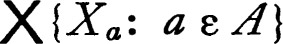 has a compact subset B with an interior point x. Then B contains a neighborhood U of x which is a member of the defining base and is therefore of the form 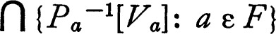, where F is a finite subset of A and Va is open in Xa. If b is a member of A ~ F, then Pb[B] = Xb and Xb is therefore compact because it is the continuous image of a compact space. Hence all but a finite number of the coordinate spaces are compact. ∎
A topological space is locally compact iff each point has at least one compact neighborhood. A compact space is automatically locally compact, every discrete space is locally compact, and each closed subspace of a locally compact space is itself locally compact (the intersection of a closed set and a compact set is a closed subset of the latter, and hence compact). Many of the pleasant properties of compact spaces are shared by locally compact spaces. The following proposition is a convenient tool for the study of such spaces.
17 THEOREM If X is a locally compact topological space which is either Hausdorff or regular, then the family of closed compact neighborhoods of each point is a base for its neighborhood system.
PROOF Let x be a point of X, C a compact neighborhood of x, and U an arbitrary neighborhood of x. If X is regular, then there is a closed neighborhood V of x which is a subset of the intersection of U and the interior of C, and evidently V is closed and compact. If X is Hausdorff and W is the interior of U ∩ C, then, since W– is a compact Hausdorff space, W contains a closed compact set V which is a neighborhood of x in W– by 5.9; but V is also a neighborhood of x in W (that is, with respect to the relativized topology for W) and is therefore a neighborhood of x in X. ∎
In particular it follows that every locally compact Hausdorff space is regular; actually a stronger statement is true.
18 THEOREM If U is a neighborhood of a closed compact subset A of a regular locally compact topological space X, then there is a closed compact neighborhood V of A such that A ⊂ V ⊂ U.
Moreover y there is a continuous function f on X to the closed unit interval such that f is zero on A and one on X ~ V.
PROOF For each point x of A there is a neighborhood W which is a closed compact subset of U. Since A is compact it may be covered by a finite family of such neighborhoods and their union is a closed compact neighborhood V of A. Then V with the relative topology is a regular compact space which is therefore normal (5.10). Hence there is a continuous function g on V to the closed unit interval such that g is zero on A and one on V ~ V0 (V0 is the interior of V). Let f equal g on V and one on X ~ V. Then f is continuous because V0 and X ~ V are separated and f is continuous on V and X ~ V0. (Problem 3.B.) ∎
It follows that each locally compact, regular, topological space is completely regular and each locally compact Hausdorff space is a Tychonoff space.
It is not true that the continuous image of a locally compact space is locally compact, for every discrete space is locally compact and each topological space is the continuous one-to-one image of a discrete space (using the same set, the discrete topology, and the identity function). If a function is both open and continuous, then the image of a compact neighborhood of a point is a compact neighborhood of the image point, and consequently the image of a locally compact space is locally compact. This simple fact and an earlier result give a precise description of those product spaces which are locally compact.
19 THEOREM If a product is locally compact, then each coordinate space is locally compact and all except a finite number of coordinate spaces are compact.
PROOF If a product is locally compact, then each coordinate space is locally compact because projection into a coordinate space is open. If infinitely many coordinate spaces are non-compact, then each compact subset of the product is nowhere dense, according to 5.16, and no point has a compact neighborhood. ∎
QUOTIENT SPACES
In this section the investigation of quotient spaces which was begun in chapter 3 is continued. We are interested in the consequences of compactness and the single theorem of the section summarizes some of the pleasant properties which result from the additional assumption. It has already been observed that the continuous image of a compact space is compact, but without additional hypotheses the image space may still be quite unattractive. For example, if X is the closed unit interval with the usual topology and  is the decomposition consisting of all subsets of the form {x: x – a is rational}, then the quotient space is compact and the projection onto the quotient space is open, but the quotient topology is indiscrete (only the space and the void set open). It turns out that, if the members of
is the decomposition consisting of all subsets of the form {x: x – a is rational}, then the quotient space is compact and the projection onto the quotient space is open, but the quotient topology is indiscrete (only the space and the void set open). It turns out that, if the members of  are compact and the decomposition is upper semi-continuous, then the quotient space inherits many of the properties of X.
are compact and the decomposition is upper semi-continuous, then the quotient space inherits many of the properties of X.
20 THEOREM Let X be a topological space, let  be an upper semi-continuous decomposition of X whose members are compact, and let
be an upper semi-continuous decomposition of X whose members are compact, and let  have the quotient topology. Then
have the quotient topology. Then  is, respectively, Hausdorff, regular, locally compact, or satisfies the second axiom of countability, provided X has the corresponding property.
is, respectively, Hausdorff, regular, locally compact, or satisfies the second axiom of countability, provided X has the corresponding property.
PROOF For convenience let us agree that a subset of X is admissible iff it is the union of members of  . In view of the definition of upper semi-continuity each neighborhood in X of a member A of
. In view of the definition of upper semi-continuity each neighborhood in X of a member A of  contains an admissible neighborhood, and hence the image under projection of a neighborhood of A in X is a neighborhood of A in
contains an admissible neighborhood, and hence the image under projection of a neighborhood of A in X is a neighborhood of A in  . Moreover, projection carries closed sets into closed sets (3.12). Suppose that X is a Hausdorff space and that A and B are distinct members of
. Moreover, projection carries closed sets into closed sets (3.12). Suppose that X is a Hausdorff space and that A and B are distinct members of  . Then by 5.9 there are disjoint neighborhoods (in X) of A and B, these contain disjoint admissible neighborhoods, and the projections of the latter are the required disjoint neighborhoods of A and B in
. Then by 5.9 there are disjoint neighborhoods (in X) of A and B, these contain disjoint admissible neighborhoods, and the projections of the latter are the required disjoint neighborhoods of A and B in  . If X is regular, A ε
. If X is regular, A ε  , and
, and  is a neighborhood of A in
is a neighborhood of A in  , then the union U of the members of
, then the union U of the members of  is a neighborhood of A in X. In view of 5.10 there is a closed neighborhood of A contained in U, and the image under projection of this neighborhood is the required neighborhood of A in
is a neighborhood of A in X. In view of 5.10 there is a closed neighborhood of A contained in U, and the image under projection of this neighborhood is the required neighborhood of A in  . If X is locally compact, then evidently there is a compact neighborhood of each member of
. If X is locally compact, then evidently there is a compact neighborhood of each member of  , and the image under projection is a compact neighborhood in
, and the image under projection is a compact neighborhood in  .
.
Finally, suppose there is a countable base  for the topology of X. The family
for the topology of X. The family  of unions of finite subfamilies of
of unions of finite subfamilies of  is countable. For each member U of
is countable. For each member U of  let U′ be the union of all members of
let U′ be the union of all members of  which are subsets of U, and let
which are subsets of U, and let  be the family of all sets U′ for U in
be the family of all sets U′ for U in  . Then the images of the members of
. Then the images of the members of  are open and it will be shown that the collection of images is a base for the quotient topology. This will follow if for each A in
are open and it will be shown that the collection of images is a base for the quotient topology. This will follow if for each A in  and each neighborhood V of A there is U in
and each neighborhood V of A there is U in  such that A ⊂ U ⊂ V. But A may be covered by a finite number of the members of
such that A ⊂ U ⊂ V. But A may be covered by a finite number of the members of  such that the union W of these members, which is a member of
such that the union W of these members, which is a member of  , is contained in V. If U = W′ then U ε
, is contained in V. If U = W′ then U ε  and A ⊂ U ⊂ V, and the theorem follows. ∎
and A ⊂ U ⊂ V, and the theorem follows. ∎
There is an interesting corollary to this theorem. If X is separable metric and the members of an upper semi-continuous decomposition are compact, then the quotient space is Hausdorff, normal, and satisfies the second axiom of countability, and is consequently metrizable.
COMPACTIFICATION
In studying a non-compact topological space X it is often convenient to construct a space which contains X as a subspace and is itself compact. For example, it is frequently useful to adjoin two points, +∞ and – ∞, to the space of real numbers. The resulting space is sometimes called the extended real numbers; it is linearly ordered by agreeing that +∞ is the largest member and – ∞ is the smallest. With this ordering (an extension of the usual ordering) it turns out that every non-void subset of the extended real numbers has both an infimum and a supremum and the space is compact relative to its order topology (5.C). The extended reals are a compactification of the space of real numbers, in a sense which will presently be made precise. Of course, this device is primarily a convenience. It does not add to our knowledge of the real numbers. However, it does permit the use of the standard compactness arguments and it simplifies many proofs materially.
The simplest sort of compactification of a topological space is made by adjoining a single point. This procedure is familiar in analysis, for in function theory the complex sphere is constructed by adjoining a single point, ∞, to the Euclidean plane and specifying that the neighborhoods of ∞ are the complements of bounded subsets of the plane. This construction can be duplicated for an arbitrary topological space; the clue to the topology to be introduced in the enlarged space is the fact that the complement of an open neighborhood of ∞ in the complex sphere is compact. The one point compactification * of a topological space X is the set X* = X ∪ {∞} with the topology whose members are the open subsets of X and all subsets U of X* such that X* ~ U is a closed compact subset of X. Of course, it must be verified that this specification gives a topology for X*. This verification is made in the proof of the following proposition.
21 THEOREM (ALEXANDROFF) The one point compactification X* of a topological space X is compact and X is a subspace. The space X* is Hausdorff if and only if X is locally compact and Hausdorff.
PROOF A set U is open in X* iff (a) U ∩ X is open in X and (b) whenever ∞ ε U, then X ~ U is compact. Consequently finite intersections and arbitrary unions of sets open in X* intersect X in open sets. If ∞ is a member of the intersection of two open subsets of X*, then the complement of the intersection is the union of two closed compact subsets of X and is therefore closed and compact. If ∞ belongs to the union of the members of a family of open subsets of X*, then ∞ belongs to some member U of the family, and the complement of the union is a closed subset of the compact set X ~ U and is therefore closed and compact. Consequently X* is a topological space and X is a subspace. If  is an open cover of X*, then ∞ is a member of some U in
is an open cover of X*, then ∞ is a member of some U in  and X ~ U is compact, and hence there is a finite subcover of
and X ~ U is compact, and hence there is a finite subcover of  . Therefore X* is compact. If X* is a Hausdorff space, then its open subspace X is a locally compact Hausdorff space. Finally it must be shown that X* is a Hausdorff space if X is a locally compact Hausdorff space. It is only necessary to show that, if x ε X, then there are disjoint neighborhoods of x and ∞. But since X is locally compact and Hausdorff there is a closed compact neighborhood U of x in X and X* ~ U is the required neighborhood of ∞. ∎
. Therefore X* is compact. If X* is a Hausdorff space, then its open subspace X is a locally compact Hausdorff space. Finally it must be shown that X* is a Hausdorff space if X is a locally compact Hausdorff space. It is only necessary to show that, if x ε X, then there are disjoint neighborhoods of x and ∞. But since X is locally compact and Hausdorff there is a closed compact neighborhood U of x in X and X* ~ U is the required neighborhood of ∞. ∎
If X is a compact topological space, then ∞ is an isolated point of the one point compactification (that is, {∞} is both open and closed). Conversely, if ∞ is an isolated point of X*, then X is closed in X* and is therefore compact.
The one point compactification is of a very special sort, and we wish to consider other methods of embedding a topological space in a compact space. It is convenient to allow a topological embedding rather than insist that the original be actually a sub-space of the constructed compact space. With this in mind, a compactification of a topological space X is defined to be a pair (f,Y), where Y is a compact topological space and f is a homeomorphism of X onto a dense subspace of Y. (To be consistent, the one point compactification of X should be the pair (i,X*), where i is the identity function.) A compactification (f,Y) is called Hausdorff iff Y is a Hausdorff space. A relation is defined on the collection of all compactifications of a space X by agreeing that (f,Y) ≧ (g,Z) iff there is a continuous map h of Y onto Z such that h ∘ f = g. Equivalently (f,Y) ≧ (g,Z) iff the function g ∘ f–1 on f[X] to Z has a continuous extension h which carries Y onto Z. If the function h can be taken to be a homeomorphism, then (f,Y) and (g,Z) are said to be topologically equivalent. In this case both of the relations (f,Y) ≧ (g,Z) and (g,Z) ≧ (f,Y) hold, for h–1 is a continuous map of Z onto Y such that f = h–1 ∘ g.
22 THEOREM The collection of all compactifications of a topological space is partially ordered by ≧. If (f,Y) and (g,Z) are Hausdorff compactifications of a space and (f,Y) ≧ (g,Z) ≧ (f,Y), then (f,Y) and (g, Z) are topologically equivalent.
PROOF If (f,Y) ≧ (g,Z) ≧ (h,U), where these are compactifications of a space X, then there are continuous functions j on Y to Z and k on Z to U such that g = j ∘ f and h = k ∘ g and hence h = k ∘ j ∘ f and (f,Y) ≧ (h,U). Consequently ≧ partially orders the collection of all compactifications of X. If (f,Y) and (g,Z) are Hausdorff compactifications each of which follows the other relative to the ordering ≧, then both f ∘ g–1 and g ∘ f–1 have continuous extensions j and k to all of Z and Y respectively. Since k ∘ j is the identity map on the dense subset g[X] of Z and Z is Hausdorff, k ∘ j is the identity map of Z onto itself and similarly j ∘ k is the identity map of Y onto Y. Consequently (f,Y) and (g,Z) are topologically equivalent. ∎
The smallest compactification of a compact Hausdorff space X is X itself (more precisely (i,X) where i is the identity map on X). One would expect that the one point compactification of a non-compact space would be the smallest relative to the ordering ≧. If we restrict our attention to Hausdorff compactifications this is actually the case (a corollary to 5.G), although it is easy to see that there is generally no compactification which is smaller than every other. On the other hand, if X is a space which has a Hausdorff compactification (by 5.15 such a space is a Tychonoff space), then there is a largest compactification which we now construct.
For each topological space X let F(X) be the family of all continuous functions on X to the closed unit interval Q. The cube QF(X) (the product of the unit interval Q taken F(X) times) is compact by the Tychonoff theorem. The evaluation map e carries a member x of X into the member e(x) of QF(X) whose f-th coordinate is f(x) for each f in F(X). Evaluation is a continuous map of X into the cube QF(X) and if X is a Tychonoff space, then e is a homeomorphism of X onto a subspace of QF(X). (The embedding lemma 4.5 states these facts explicitly.) The Stone-Čech compactification is the pair (e, β(X)) where β(X) is the closure of e[X] in the cube QF(X) We take time out for a lemma before showing the crucial property of this compactification.
23 LEMMA If f is a function on a set A to a set B and f* is the map of QB into QA defined by f*(y) = y ∘ f for all y in QB, then f* is continuous.
PROOF A map into a product space is continuous iff the map followed by each projection is continuous (3.3). If a is a member of A, then Pa ∘ f*(f) = Pa(y ∘ f) = y(f(a)): But y(f(a)) is simply the projection of y into the f(a) coordinate space of QB and this is a continuous map. ∎
The construction outlined in this lemma is worthy of notice, for it is used systematically in dealing with function spaces. Observe that the function f* induced by f goes in the direction opposite to that of f, in the sense that f carries A into B while f* carries QB into QA.
With the aid of this lemma the principal theorem on the Stone-Čech compactification becomes a routine though mildly intricate calculation.
24 THEOREM (STONE-ČECH) If X is a Tychonqff space and f is a continuous function on X to a compact Hausdorff space Y, then there is a continuous extension of f which carries the compactification β(X) into Y. (More precisely, if (e,β(X)) is the Stone-Čech compactification , then f ∘ e–1 can be extended to a continuous function on β(X) to Y.)
PROOF Given f define f* on F(Y) to F(X) by letting f*(a) = a ∘ f for each a in F(Y). Continuing, define f** on QF(X) to QF(Y) by letting f**(q) = q ∘ f* for each q in QF(X) Let e be the evaluation map of X into QF(X) and let g be the evaluation map of Y into QF(X). The following diagram shows the situation.
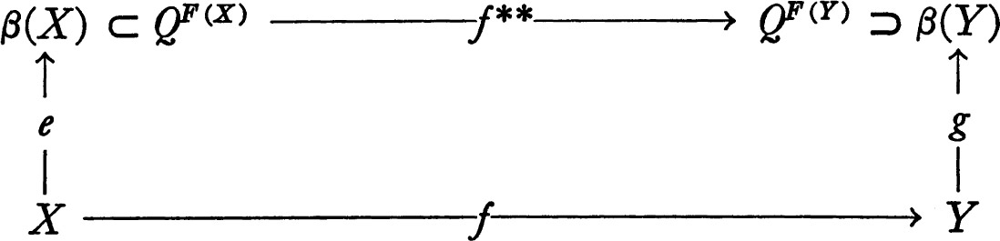
The map e is a homeomorphism, and the map g is a homeomorphism of Y onto β(Y) because Y is compact Hausdorff. The map f** is continuous by lemma 5.23 and, if it is shown that f** ∘ e = g ∘ f, then it will follow that g–1 ∘ f** is the required continuous extension of f ∘ e–1. If x is a member of X and h a member of F(Y), then (f** ∘ e)(x)(h) = (e(x) ∘ f*)(h) = e(x)(h ∘ f) = h ∘ f(x) = g(f(x))(h) = (g ∘ f)(x)(h) because of the definitions of f**,f*, e, and g respectively. The theorem follows. ∎
The extension property of the foregoing theorem shows that the Stone-Čech compactification (e,β(X)) follows every other Hausdorff compactification in the ordering ≧ and is therefore the largest such compactification. If (f,Y) has this extension property, then (f,Y) ≧ (e,β(X)) and consequently is topologically equivalent to (e,β(X)) by 5.22. Hence the compactification (e,β(X)) is characterized (to a topological equivalence) by the extension property of theorem 5.24.
25 Note The results above (M. H. Stone [6] and Čech, [1]) furnish a maximal compactification. Many other smaller compactifications have been constructed for various purposes. There is a very large literature on the subject and it is only possible to cite a few sample contributions. For a recent contribution to one of the oldest compactification theories (Carathéodory’s prime end theory) see Ursell and Young [1]. Freudenthal [1] examines a compactification which is maximal in a class much more restricted than that majorized by β(X). A general discussion of compactification is given by Myškis ([1], [2], and [3]). He distinguishes between “external” descriptions of a compactification (such as that of β(X), and the almost periodic compactification of a group as sketched in 7.T) and “internar” descriptions (for example the Alexandroff one point compactification and the Wallman (5.R)). The relation between internal and external description of a compactification is frequently the key to the usefulness of the notion. Certain parts of the internal structure of β(X) have been discussed (see Nagata [2], Smirnov [3], and Wallace [2]). The compactification β(X) is also related to the notion of absolute closure; see, for example, M. H. Stone [6], A. D. Alexandroff [1], Katĕtov [1], and Ramanathan [1].
LEBESGUE’S COVERING LEMMA
There is an extremely useful lemma of Lebesgue which states that, if  is an open cover of a closed interval of real numbers, then there is a positive number r such that, if | x – y | < r, then both x and y belong to some member of the cover. In a certain sense each open cover covers the points of the interval “uniformly.” In this section we prove this lemma and a topological variant which will apply to arbitrary compact spaces. The latter result may be considered to be an introduction to the ideas of the next section on paracompactness.
is an open cover of a closed interval of real numbers, then there is a positive number r such that, if | x – y | < r, then both x and y belong to some member of the cover. In a certain sense each open cover covers the points of the interval “uniformly.” In this section we prove this lemma and a topological variant which will apply to arbitrary compact spaces. The latter result may be considered to be an introduction to the ideas of the next section on paracompactness.
26 THEOREM If  is an open cover of a compact subset A of a pseudo-metric space (X,d), then there is a positive number r such that the open r-sphere about each point of A is contained in some member of
is an open cover of a compact subset A of a pseudo-metric space (X,d), then there is a positive number r such that the open r-sphere about each point of A is contained in some member of  .
.
PROOF Let U1, …, Un be a finite subcover of the open cover  of A, let fi(x) = dist [x,X ~ Ui], and let f(x) = max [fi(x) : i = 1, …, n]. Then each fi is continuous and consequently f is continuous. Each point of A belongs to some Ui and hence f(x) ≧ fi(x) > 0 for each x in A. The set f[A] is a compact subset of the positive real numbers and consequently there is a positive real number r such that f(x) > r for all x in A. Hence for each x in A there is i such that fi(x) > r and it follows that the open r-sphere about x is contained in Ui. ∎
of A, let fi(x) = dist [x,X ~ Ui], and let f(x) = max [fi(x) : i = 1, …, n]. Then each fi is continuous and consequently f is continuous. Each point of A belongs to some Ui and hence f(x) ≧ fi(x) > 0 for each x in A. The set f[A] is a compact subset of the positive real numbers and consequently there is a positive real number r such that f(x) > r for all x in A. Hence for each x in A there is i such that fi(x) > r and it follows that the open r-sphere about x is contained in Ui. ∎
There is a useful corollary of the foregoing theorem. If A is a compact subset of a pseudo-metric space and U is a neighborhood of A, then there is a positive number r such that U contains the open r-sphere about every point of A; that is, the distance from A to X ~ U is positive.
Theorem 5.26 may be rephrased in a suggestive way. If V is the set of all pairs of points of X such that d(x,y) < r, then V[x] = {y: (x,y) ε V} is simply the open r-sphere about x. The set V is an open subset of X × X and contains the diagonal Δ (the set of all pairs (x,x) for x in X). The foregoing theorem then implies the following topological result: If  is an open cover of a compact pseudo-metric space, then there is a neighborhood V of the diagonal in X × X such that for each point x the set V[x] is contained in some member of
is an open cover of a compact pseudo-metric space, then there is a neighborhood V of the diagonal in X × X such that for each point x the set V[x] is contained in some member of  . This variant of the Lebesgue lemma turns out to be correct for arbitrary compact regular spaces.
. This variant of the Lebesgue lemma turns out to be correct for arbitrary compact regular spaces.
A cover  of a topological space is called an even cover iff there is a neighborhood V of the diagonal in X × X such that for each x the set V[x] is contained in some member of
of a topological space is called an even cover iff there is a neighborhood V of the diagonal in X × X such that for each x the set V[x] is contained in some member of  . In other words, the family of all sets of the form V[x] refines
. In other words, the family of all sets of the form V[x] refines  . Recall that a cover
. Recall that a cover  is a refinement of
is a refinement of  iff each member of
iff each member of  is a subset of some member of
is a subset of some member of  and that a family
and that a family  of sets is locally finite iff there is a neighborhood of each point of the space which intersects only finitely many members of
of sets is locally finite iff there is a neighborhood of each point of the space which intersects only finitely many members of  . A family of sets is closed iff each member is closed.
. A family of sets is closed iff each member is closed.
27 THEOREM If an open cover of a space has a closed locally finite refinement then it is an even cover.
Consequently each open cover of a compact regular space is even.
PROOF Let  be an open cover of a topological space X and let
be an open cover of a topological space X and let  be a closed locally finite refinement. For each A in
be a closed locally finite refinement. For each A in  choose a member UA of
choose a member UA of  such that A ⊂ UA, and let VA = (UA × UA) ∪ {(X ~ A) × {X ~ A)). Evidently VA is an open neighborhood of the diagonal in X × X, and, if x ε A, then VA[x] = UA. Letting 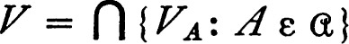, it follows that for each point x the set V[x] ⊂ VA[x] = UA and consequently the family of sets of the form V[x] is a refinement of
such that A ⊂ UA, and let VA = (UA × UA) ∪ {(X ~ A) × {X ~ A)). Evidently VA is an open neighborhood of the diagonal in X × X, and, if x ε A, then VA[x] = UA. Letting 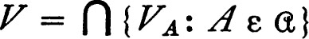, it follows that for each point x the set V[x] ⊂ VA[x] = UA and consequently the family of sets of the form V[x] is a refinement of  . It remains to be proved that V is a neighborhood of the diagonal. For each point (x,x) of the diagonal choose a neighborhood W of x such that W intersects only finitely many members of
. It remains to be proved that V is a neighborhood of the diagonal. For each point (x,x) of the diagonal choose a neighborhood W of x such that W intersects only finitely many members of  . If W ∩ A is void, then W ⊂ X ~ A and W × W ⊂ VA. It follows that V contains the intersection of W × W with a finite number of the sets VA and is therefore a neighborhood of (x,x).
. If W ∩ A is void, then W ⊂ X ~ A and W × W ⊂ VA. It follows that V contains the intersection of W × W with a finite number of the sets VA and is therefore a neighborhood of (x,x).
Finally, if X is compact and regular, then each open cover  has a closed finite refinement (cover X by open subsets whose closures refine
has a closed finite refinement (cover X by open subsets whose closures refine  ) and hence each open cover is even. ∎
) and hence each open cover is even. ∎
* PARACOMPACTNESS
A topological space is paracompact iff it is regular * and each open cover has an open locally finite refinement. The purpose of this section is to prove the equivalence of paracompactness and a number of other conditions. The methods used are closely related to those of chapter 6.
Recall that a family  of subsets of a topological space is discrete iff there is a neighborhood of each point of the space which intersects at most one member of the family. The family et is σ-discrete (σ-locally finite) iff it is the union of countably many discrete (respectively locally finite) subfamilies. The principal theorem of the section can now be stated; its proof is given in the sequence of lemmas which follows the statement.
of subsets of a topological space is discrete iff there is a neighborhood of each point of the space which intersects at most one member of the family. The family et is σ-discrete (σ-locally finite) iff it is the union of countably many discrete (respectively locally finite) subfamilies. The principal theorem of the section can now be stated; its proof is given in the sequence of lemmas which follows the statement.
28 THEOREM If X is a regular topological space, then the following statements are equivalent.
(a)The space X is paracompact.
(b)Each open cover of X has a locally finite refinement.
(c)Each open cover of X has a closed locally finite refinement.
(d)Each open cover of X is even.
(e)Each open cover of X has an open σ-discrete refinement.
(f)Each open cover of X has an open σ-locally finite refinement.
The pattern of proof is (a) → (b) → (c) → (d) → (e) → (f) → (b) → (a). The first of these implications is clear, and the following lemma demonstrates the second.
29 LEMMA If X is regular and each open cover has a locally finite refinement, then each open cover has a closed locally finite refinement.
PROOF If  is an open cover of X, then there is an open cover
is an open cover of X, then there is an open cover  such that the family of closures of members of
such that the family of closures of members of  refines
refines  , because X is regular. (For each x, if x ε U there is an open neighborhood V of x such that V– ⊂ U.) Let
, because X is regular. (For each x, if x ε U there is an open neighborhood V of x such that V– ⊂ U.) Let  be a locally finite refinement of
be a locally finite refinement of  . Then the family
. Then the family  of all closures of members of
of all closures of members of  is locally finite, and each member of
is locally finite, and each member of  is a subset of V– for some V in
is a subset of V– for some V in  . Hence
. Hence  is the required closed locally finite refinement of
is the required closed locally finite refinement of  . ∎
. ∎
For any topological space an open cover which has a closed locally finite refinement is even, according to 5.27. Hence statement (c) of the theorem implies (d). Before proving the next implication we prove two lemmas which are of some interest in themselves. For convenience we review some of the facts which will be needed (see the section on relations in chapter 0). If U is a subset of X × X and x ε X, then U[x] is the set of all points y such that (x,y) ε U. If A is a subset of X, then U[A] = {y: (x,y) ε U for some x in A}; clearly U[A] is the union of the sets U[x] for x in A. The set {(x,y) : (y,x) ε U} is denoted by U–1, and U is called symmetric if U = U–1. The set U ∩ U–1 is always symmetric. If U and V are subsets of X × X, then U ∘ V is the set of all pairs (x,z) such that for some y in X it is true that (x,y) ε V and (y,z) ε U. In other words (x,z) ε U ∘ V iff (x,z) ε V–1[y] × U[y] for some y, and consequently U ∘ V is the union of the sets V–1[y] × U[y] for y in X. In particular if V is symmetric, then 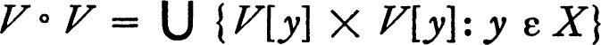. Finally, for each subset A of X it is true that (U ∘ F)[A] = U[V[A]].
30 LEMMA Let X be a topological space such that each open cover is even. If U is a neighborhood of the diagonal in X × X then there is a symmetric neighborhood V of the diagonal such that V ∘ V ⊂ U.
PROOF For each point x of X there is a neighborhood W(x) such that W(x) × W(x) ⊂ U, because U is a neighborhood of the diagonal. The family 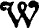 of all sets of the form W(x) is an open cover of X and there is therefore a neighborhood R of the diagonal such that the family of all sets R[x] refines , and hence R[x] × R[x] ⊂ U for each x. Finally, let V = R ∩ R–1. Then V is a symmetric neighborhood of the diagonal and V[x] × V[x] ⊂ U for all x. Since V ∘ V is the union of the sets V[x] × V[x] it follows that V ∘ V ⊂ U. ∎
The preceding lemma has the following intuitive content. Let us say two points x and y are at most U-distance apart if (x,y) ε U. Then there is V such that, if x and y, and y and z, are at most V-distance apart, then x and z are at most U-distance apart.
The following lemma shows that paracompact spaces satisfy a very strong normality condition.
31 LEMMA Let X be a topological space such that each open cover is even and let  be a locally finite (or a discrete) family of subsets of X. Then there is a neighborhood V of the diagonal in X × X such that the family of all sets V[A] for A in
be a locally finite (or a discrete) family of subsets of X. Then there is a neighborhood V of the diagonal in X × X such that the family of all sets V[A] for A in  is locally finite (respectively discrete).
is locally finite (respectively discrete).
PROOF If  is a locally finite family of subsets there is an open cover
is a locally finite family of subsets there is an open cover  of X such that each member of
of X such that each member of  intersects only finitely many of the members of the family
intersects only finitely many of the members of the family  . Let U be a neighborhood of the diagonal such that the sets U[x] refine
. Let U be a neighborhood of the diagonal such that the sets U[x] refine  . By the preceding lemma there is a neighborhood V of the diagonal such that V ∘ V ⊂ U, and it may be supposed that V = V–1. If V ∘ V[x] ∩ A is void, then V[x] must be disjoint from V[A] because: if y ε V[x] ∩ V[A), then (y,x) ε V–1 = V, (z,y) ε V for some z in A, and hence (z,x) ε V ∘ V. Then z ε V ∘ V[x] and this is a contradiction. Consequently if V[x] intersects V[A], then V ∘ V[x] intersects A, and it follows that the family of all sets V[A] for A in
. By the preceding lemma there is a neighborhood V of the diagonal such that V ∘ V ⊂ U, and it may be supposed that V = V–1. If V ∘ V[x] ∩ A is void, then V[x] must be disjoint from V[A] because: if y ε V[x] ∩ V[A), then (y,x) ε V–1 = V, (z,y) ε V for some z in A, and hence (z,x) ε V ∘ V. Then z ε V ∘ V[x] and this is a contradiction. Consequently if V[x] intersects V[A], then V ∘ V[x] intersects A, and it follows that the family of all sets V[A] for A in  is locally finite. If “finitely many” is replaced by “at most one,” then a proof of the corresponding proposition for discrete families is obtained. ∎
is locally finite. If “finitely many” is replaced by “at most one,” then a proof of the corresponding proposition for discrete families is obtained. ∎
If V is an open subset of X × X, then V[x] is open for every point x of X, because V[x] is the inverse image of V under the continuous map which carries each point y of X into (x,y). If A is a subset of X, then V[A] is open because it is the union of the sets V[x] for x in A. Consequently the preceding lemma permits us to enlarge each member of a locally finite or discrete family to an open set and still preserve the character of the family. In particular, if each open cover  of a regular space has a locally finite refinement
of a regular space has a locally finite refinement  , then the lemma applies (we have shown that (b) → (c) → (d) in 5.28) and there is an open neighborhood V of the diagonal such that the family of all sets V[A] for A in
, then the lemma applies (we have shown that (b) → (c) → (d) in 5.28) and there is an open neighborhood V of the diagonal such that the family of all sets V[A] for A in  is locally finite. The latter family may fail to be a refinement of
is locally finite. The latter family may fail to be a refinement of  , but this is easily remedied by choosing UA in
, but this is easily remedied by choosing UA in  such that A ⊂ UA and then letting WA = UA ∩ V[A]. The family which is constructed in this fashion is clearly an open locally finite refinement of
such that A ⊂ UA and then letting WA = UA ∩ V[A]. The family which is constructed in this fashion is clearly an open locally finite refinement of  and it follows that the space is paracompact; that is, (b) → (a) in 5.28.
and it follows that the space is paracompact; that is, (b) → (a) in 5.28.
There is an obvious corollary to 5.31. A family consisting of two closed disjoint subsets is evidently discrete and hence:
32 COROLLARY A paracompact space is normal.
The proof of 5.28 will be complete if we establish two facts: If X is regular and each open cover is even, then each open cover has an open σ-discrete refinement, and if each open cover of X has an open σ-locally finite refinement, then each open cover has a locally finite refinement. (Evidently (e) → (f) in 5.28.)
33 LEMMA If X is a space such that each open cover is even, then every open cover of X has an open σ-discrete refinement.
PROOF The proof, like that of 4.21, is an application of A. H. Stone’s trick. (This lemma can be deduced from 4.21 and the results of chapter 6.) Because of lemma 5.31 it is sufficient to find a σ-discrete refinement of an open cover  , since such a σ-discrete refinement can then be “expanded” to an open σ-discrete refinement. Let V be an open neighborhood of the diagonal such that the family of all sets V[x] for x in X refines
, since such a σ-discrete refinement can then be “expanded” to an open σ-discrete refinement. Let V be an open neighborhood of the diagonal such that the family of all sets V[x] for x in X refines  . Let V0 = V and select, inductively, Vn to be an open symmetric neighborhood of the diagonal such that Vn ∘ Vn ⊂ Vn–1 for each positive integer n. Let U1 = V1 and, inductively, let Un+1 = Vn+1 ∘ Un. It is easy to see that Un ⊂ V0 for each n, and it follows that for each n the family of all Un[x] for x in X refines
. Let V0 = V and select, inductively, Vn to be an open symmetric neighborhood of the diagonal such that Vn ∘ Vn ⊂ Vn–1 for each positive integer n. Let U1 = V1 and, inductively, let Un+1 = Vn+1 ∘ Un. It is easy to see that Un ⊂ V0 for each n, and it follows that for each n the family of all Un[x] for x in X refines  . Choose a relation < which well-orders X (see 0.25) and for each n and each x let 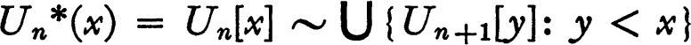. For each fixed n the family
. Choose a relation < which well-orders X (see 0.25) and for each n and each x let 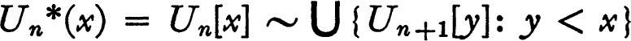. For each fixed n the family  of all sets Un*(x) is discrete, as may be demonstrated as follows. Clearly Un*(x) is disjoint from Vn+1[Un*(y)] if x ≠ y because of the construction. If for some z in X the neighborhood Vn+1[z] intersects Un*(y), then z ε Vn+1[Un*(y)] and Vn+1[Un*(y)] is a neighborhood of z which intersects no set Un*(x) for x ≠ y. It follows that the family
of all sets Un*(x) is discrete, as may be demonstrated as follows. Clearly Un*(x) is disjoint from Vn+1[Un*(y)] if x ≠ y because of the construction. If for some z in X the neighborhood Vn+1[z] intersects Un*(y), then z ε Vn+1[Un*(y)] and Vn+1[Un*(y)] is a neighborhood of z which intersects no set Un*(x) for x ≠ y. It follows that the family  is discrete and it remains to be proved that each point of X belongs to some member of some
is discrete and it remains to be proved that each point of X belongs to some member of some  . For x in X choose y to be the first point of X such that x belongs to Un[y] for some n. Then surely x ε Un*(y) for some n. ∎
. For x in X choose y to be the first point of X such that x belongs to Un[y] for some n. Then surely x ε Un*(y) for some n. ∎
34 LEMMA If each open cover of a space has an open σ-locally finite refinement, then each open cover has a locally finite refinement.
PROOF Let  be an open cover and let
be an open cover and let  be an open σ-locally finite refinement. Suppose that 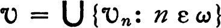 where each 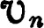 is an open locally finite family. For each n and each member V of let 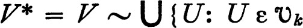 for some k < n), and let be the family of all sets of the form V*. Then is a cover of X and a refinement of
be an open σ-locally finite refinement. Suppose that 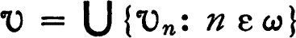 where each 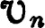 is an open locally finite family. For each n and each member V of let 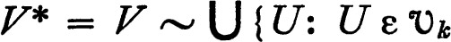 for some k < n), and let be the family of all sets of the form V*. Then is a cover of X and a refinement of  . Finally, for x in X let n be the first integer such that x belongs to some member V of . Then V is a neighborhood of x which is disjoint from every member of save those which were constructed from the families 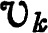 for k ≦ n. It follows that is locally finite. ∎
. Finally, for x in X let n be the first integer such that x belongs to some member V of . Then V is a neighborhood of x which is disjoint from every member of save those which were constructed from the families 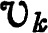 for k ≦ n. It follows that is locally finite. ∎
Theorem 4.21 states that each open cover of a pseudo-metrizable space has an open σ-discrete refinement. This fact and theorem 5.28 of this section then give the corollary:
35 COROLLARY Each pseudo-metrizable space is paracompact.
In conclusion it should be remarked that subspaces, quotients, and products of paracompact spaces are usually not paracompact. Moreover, a space may be locally metrizable, locally compact, Hausdorff, normal, and satisfy the first axiom of countability and still fail to be paracompact. The requisite examples are given in the problems at the end of this chapter.
36 Notes There is another characterization of paracompactness which might be added to the list given in 5.28. A regular space is paracompact iff it is fully normal (see problem 5. ). This characterization is due to A. H. Stone [1]. The equivalences (b), (c), (e), and (f) of theorem 5.28 are due to E. Michael [1]. As far as I know, equivalence (d) was first noticed by J. S. Griffin and myself.
). This characterization is due to A. H. Stone [1]. The equivalences (b), (c), (e), and (f) of theorem 5.28 are due to E. Michael [1]. As far as I know, equivalence (d) was first noticed by J. S. Griffin and myself.
The σ-discrete characterization of paracompactness might well be taken as a definition of countable dimension (see Hurewicz and Wallman [1; 32] and Eilenberg [1]). There is an Fσ-theorem (Michael loc. cit.) which is also suggestive of dimension theory.
PROBLEMS
AEXERCISE ON REAL FUNCTIONS ON A COMPACT SPACE
(a) If A is a non-void compact subset of the space of real numbers, then both the supremum and the infimum of A belong to A.
(b) Each continuous real valued function f on a compact space X assumes a maximum and a minimum value. That is, there are points x and y of the space such that f(x) and f(y) are respectively the supremum and infimum of f on X.
(c) Let f be a continuous real valued function f on a compact space X. If f is always positive, then f is bounded away from zero, in the sense that there is e > 0 such that f(x) > e for x in X.
BCOMPACT SUBSETS
(a) The intersection of two compact subsets of a topological space may fail to be compact. The intersection of the members of an arbitrary family of closed and compact subsets is closed and compact. (Clearly two compact subsets with non-compact intersection must be subsets of a space which is not Hausdorff. Let X be the product of the space of real numbers and an indiscrete space which has two members.)
(b) The closure of a compact subset of a topological space may fail to be compact. However, the closure of a compact subset of a regular space is compact.
(c) If A and B are disjoint closed subsets of a pseudo-metric space and A is compact, then there is a member x of A such that dist (A,B) = dist (x,B) > 0. (The function dist (x,B) is continuous in x and is positive for x in A.)
(d) If A and B are disjoint closed and compact subsets of a pseudo-metric space, then there are members x of A and y of B such that d(x,y) = dist (A,B).
CCOMPACTNESS RELATIVE TO THE ORDER TOPOLOGY
Let X be a set which is linearly ordered by a relation < and let X have the order topology (see 1.I). Then every closed, order-bounded subset of X is compact iff X is order-complete relative to <. (The family of all subsets of X of the form {x: a < x} or {x: x < a} is a sub-base for the order topology for X and Alexander’s subbase theorem 5.6 applies. A proof which is independent of 5.6 can be made via the argument which was used in 5.14.)
DISOMETRIES OF COMPACT METRIC SPACES
Let X and Y be metric spaces, let X be compact, let f be an isometry of X onto a subspace of Y, and let g be an isometry of Y onto a sub-space of X. Then f maps X onto Y. (If h is an isometry of X onto a proper subset of itself and x ε X ~ h[X] let a = dist (x,h[X]). Define a sequence inductively by letting x0 = x and xn+1 = h(xn) and prove that, if m ≠ n, then d(xm,xn) ≧ a.)
ECOUNTABLV COMPACT AND SEQUENTIALLY COMPACT SPACES
A topological space is countably compact iff every countable open cover has a finite subcover. A space is sequentially compact iff every sequence has a convergent subsequence.
(a) A space is countably compact iff each sequence has a cluster point.
(b) A T1-space is countably compact iff every infinite set has an accumulation point. (See 5.3.)
(c) A T1-space is countably compact iff every infinite open cover has a proper subcover. (If A is an infinite set with no accumulation point, then each subset of A is closed. One may construct an open cover  by choosing an open neighborhood of each point of A which contains no other point of A and then adjoining, if necessary, X ~ A. Then
by choosing an open neighborhood of each point of A which contains no other point of A and then adjoining, if necessary, X ~ A. Then  has no proper subcover. On the other hand, if
has no proper subcover. On the other hand, if  is an open cover with no proper subcover then each member V of
is an open cover with no proper subcover then each member V of  contains a point belonging to no other member of
contains a point belonging to no other member of  .)
.)
(d) A space satisfying the first countability axiom is countably compact iff it is sequentially compact (5.5).
(e) With the order topology, the set Ω0 of all ordinal numbers less than the first uncountable ordinal Ω is locally compact, Hausdorff, satisfies the first axiom of countability, and is sequentially compact, but is not compact.
Note Proposition (c) is due to Arens and Dugundji [1].
FCOMPACTNESS; THE INTERSECTION OF COMPACT CONNECTED SETS
(a) Let  be a family of closed compact sets such that 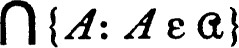 is a subset of an open set U. Then there is a finite subfamily
be a family of closed compact sets such that 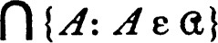 is a subset of an open set U. Then there is a finite subfamily  of
of  such that fi 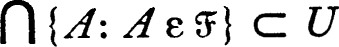.
such that fi 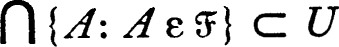.
(b) If  is a family of compact subsets of a Hausdorff space X such that finite intersections of members of
is a family of compact subsets of a Hausdorff space X such that finite intersections of members of  are connected, then 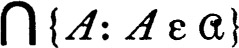 is connected.
are connected, then 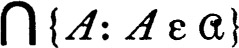 is connected.
GPROBLEM ON LOCAL COMPACTNESS
If X is a Hausdorff space and Y is a dense locally compact subspace, then Y is open.
HNEST CHARACTERIZATION OF COMPACTNESS
A topological space X is compact iff each nest of closed non-void sets has a non-void intersection. (Recall that a nest is a family of sets which is linearly ordered by inclusion. If each nest of closed non-void sets has a non-void intersection and  is a family of closed sets with the finite intersection property, let
is a family of closed sets with the finite intersection property, let  be a maximal family of closed sets which contains
be a maximal family of closed sets which contains  and has the finite intersection property, and let
and has the finite intersection property, and let  be a maximal nest in
be a maximal nest in  . Examination of the properties of
. Examination of the properties of  and of
and of  leads to a proof. An entirely different proof can be based on well ordering, using part of the procedure outlined in the next problem.)
leads to a proof. An entirely different proof can be based on well ordering, using part of the procedure outlined in the next problem.)
ICOMPLETE ACCUMULATION POINTS
A point x is a complete accumulation point of a subset A of a topological space iff for each neighborhood U of x the sets A and A ∩ U have the same cardinal number. A topological space is compact iff each infinite subset has a complete accumulation point. (If X is not compact choose an open cover  with no finite subcover such that the cardinal number c of
with no finite subcover such that the cardinal number c of  is as small as possible. Let C be a well-ordered set of cardinal c such that the set of predecessors of each member has a cardinal less than
is as small as possible. Let C be a well-ordered set of cardinal c such that the set of predecessors of each member has a cardinal less than  . (It is shown in the appendix that c is such a set.) Let f be a one-to-one map of C onto
. (It is shown in the appendix that c is such a set.) Let f be a one-to-one map of C onto  . Then for each member b of C the union 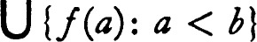 does not cover X and, in fact, the complement of this union must have cardinal number at least as great as c It is therefore possible to choose xb from the complement such that xa ≠ xb for a < b. Consider the set of all xb.)
. Then for each member b of C the union 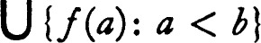 does not cover X and, in fact, the complement of this union must have cardinal number at least as great as c It is therefore possible to choose xb from the complement such that xa ≠ xb for a < b. Consider the set of all xb.)
JEXAMPLE: UNIT SQUARE WITH DICTIONARY ORDER
Let X be the cartesian product of the closed unit interval Q with itself ordered by dictionary (lexicographic) order. (That is, (a,b) < (c,d) iff a < c or a = c and b < d.) With the order topology X is compact, connected, and Hausdorff. It satisfies the first countability axiom but is not separable and is hence not metrizable.
KEXAMPLE (THE ORDINALS) ON NORMALITY AND PRODUCTS
The product of a locally compact, normal Hausdorff space and a compact Hausdorff space may fail to be normal. (The difficult part has already been established in 4.E and it is only necessary to show that Ω′ and Ω0 are compact and locally compact Hausdorff respectively. Ω′ is the space of ordinals less than or equal to Ω and Ω0 is the set of ordinals less than Ω, each with the order topology.)
LTHE TRANSFINITE LINE
Let A be a well-ordered set, let the half-open interval [0,1) have the usual order, let A × [0,1) have the dictionary (lexicographic) order, and let A × [0,1) have the order topology. Discuss the properties of this space.
MEXAMPLE: THE HELLY SPACE
The Helly space is the family H of all non-decreasing functions on the closed unit interval Q with values in Q. It is a subset of the product space QQ, and its topology is the relative product topology. The space H has the following properties:
(a) H is compact Hausdorff. (It is a closed subspace of QQ.)
(b) H satisfies the first axiom of countability and is hence sequentially compact. (The set of points of discontinuity of each member of H is countable. This fact, and the fact that Q is separable, must be used in constructing a countable base for the neighborhood system of a point h of H.)
(c) H is separable. (A countable dense set can be constructed using the rationals.)
(d) H is not metric. (For t in Q let ft(x) be 0 for x < t, 1 for x > t, and let ft(t) = ½. The family A of all functions of the form ft is uncountable and no member of A is an accumulation point of A. But each subspace of a compact metric space is separable.)
NEXAMPLES ON CLOSED MAPS AND LOCAL COMPACTNESS
(a) Let X be the space of real numbers with the usual topology, let I be the set of integers, and let  be the decomposition whose members are I and all sets {x} for x in X ~ I. Then the projection of X onto the quotient space is closed and continuous, but the quotient space is not locally compact nor does it satisfy the first axiom of countability.
be the decomposition whose members are I and all sets {x} for x in X ~ I. Then the projection of X onto the quotient space is closed and continuous, but the quotient space is not locally compact nor does it satisfy the first axiom of countability.
(b) Let Ω0 be the set of all ordinal numbers less than Ω, with the order topology, let A be a closed uncountable set whose complement is also uncountable, and let  be the decomposition whose members are A and all sets {x} for x in Ω0 ~ A. Then the projection of Ω0 onto the quotient space is continuous and closed and the quotient space is compact, but it fails to satisfy the first axiom of countability. (Use the interlacing lemma 4.E.)
be the decomposition whose members are A and all sets {x} for x in Ω0 ~ A. Then the projection of Ω0 onto the quotient space is continuous and closed and the quotient space is compact, but it fails to satisfy the first axiom of countability. (Use the interlacing lemma 4.E.)
OCANTOR SPACES
The Cantor discontinuum (middle third set) is the set of all members of the closed unit interval which have a triadic expansion in which the digit one does not occur. (It will be convenient throughout this problem to use only irrational triadic expansions, that is, expansions which are not identically zero from some point on. Each real number has a unique irrational expansion, as noted in 0.14.) The discontinuum is called the middle third set because: The (open) middle third of the interval [0,1] is precisely the set of numbers whose triadic expansions have ones in the first place after the “decimal” point. The middle third of each of the remaining intervals consists of points whose expansions have ones in the second but not the first place. Continuing, it is clear that the discontinuum can be obtained by successive deletion of middle thirds.
A product space 2A (that is, all functions on a set A to the discrete space whose only members are 0 and 1, with the product topology) is called a Cantor space.
(a) The Cantor discontinuum is homeomorphic to 2ω. For x in 2ω let f(x) be the member of [0,1] whose triadic expansion has the digit 2x(p) in the p-th place.)
(b) Each point of the discontinuum is an accumulation point and the complement of the discontinuum is an open dense subset of the real numbers.
(c) If A is a closed non-void subset of 2ω, then there is a continuous function r on 2ω to A such that r(x) = x for x in A. (It is a little easier to see the proof if one looks at the Cantor discontinuum, which is the homeomorphic image of 2ω.)
(d) Each compact Hausdorff space is the continuous image of a closed subset of some Cantor space. (Let F be the family of all functions f on 2 such that f(0) and f(1) are closed subsets of the compact Hausdorff space X and f(0) ∪ f(1) = X. If x is a member of 2F and f ε F, then f(xf) is a closed subset of X. The intersection 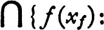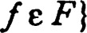 is void or consists of a single point, and in the latter case this point is defined to be ϕ(x). One can prove that the domain of ϕ is a closed subset of 2F; if U is a subset of X, then ϕ–1[U] = {x: x is a member of domain ϕ and 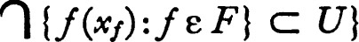.)
(e) Each compact metric space X is the continuous image of 2ω. (Instead of the family F of the previous proof one may construct a smaller family which will play the same role. If U0, …, Un, … is a base for the topology of X let fn(0) = Un– and fn(1) = X~ Un.)
(f) Each Cantor space 2A satisfies the countable chain condition; that is, each disjoint family of open sets is countable. (If  is a disjoint family of open subsets of 2A, then one may suppose that the members of
is a disjoint family of open subsets of 2A, then one may suppose that the members of  belong to the defining base for the product topology; each member is, in a natural sense, the intersection of a finite number of half-spaces. For some integer n there is then an infinite (in fact, uncountable) disjoint family, each member of which is the intersection of precisely n half-spaces. A simple argument on disjointness completes the proof.
belong to the defining base for the product topology; each member is, in a natural sense, the intersection of a finite number of half-spaces. For some integer n there is then an infinite (in fact, uncountable) disjoint family, each member of which is the intersection of precisely n half-spaces. A simple argument on disjointness completes the proof.
There is a shorter, more sophisticated proof. A Cantor space with coordinatewise addition, modulo 2, is a compact topological group and hence there is a Haar measure (see Halmos [1; 254]). Since this measure is finite and is positive for open sets the countable chain condition is clear.)
(g) Not every compact Hausdorff space is the continuous image of the Cantor set. (The one point compactification of an uncountable discrete space does not satisfy the countable chain condition.)
Notes Proposition (b) is due to Cantor, (e) to P. Alexandroff and Urysohn, and (f) and (g) to J. W. Tukey. Proposition (g) is also a corollary of some results of Szpilrajn [1].
PCHARACTERIZATION OF THE STONE-ČECH COMPACTIFICATION
Let (f,Y) be a Hausdorff compactification of the topological space X such that for each bounded continuous real-valued function g on X the function g ∘ f–1 has a continuous extension. Then (f,Y) is topologically equivalent to the Stone-Čech compactification (e,β(X)). (Consider the definition of β(X).)
QEXAMPLE (THE ORDINALS) ON COMPACTIFICATION
Let Ω′ be the set of all ordinal numbers less than or equal to Ω, and let Ω0 = Ω′ ~ { Ω }. Assign each the order topology. Then the Stone-Čech compactification β(Ω0) is homeomorphic to Ω′. (This will follow from the preceding problem if it is shown that every bounded real-valued continuous function f on Ω0 is eventually constant,* in the sense that for some x in Ω0, if y > x, then f (y) = f(x). If f is a bounded continuous real-valued function and r and s are real numbers such that r > s, then the interlacing lemma 4.E shows that one of the sets {x: f(x) ≧ r) and {x: f(x) ≦ s} is countable. Using this fact it is not hard to see that f is eventually constant. The hypothesis that f be bounded is actually not essential.)
Note This result is due to Tong [1].
RTHE WALLMAN COMPACTIFICATION
Let X be a T1-space, let  be the family of all closed subsets of X, and let w(X) be the collection of all subfamilies
be the family of all closed subsets of X, and let w(X) be the collection of all subfamilies  of
of  which possess the finite intersection property and are maximal in
which possess the finite intersection property and are maximal in  relative to this property.
relative to this property.
(a) If 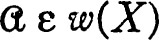 then the intersection of two members of  is a member of
is a member of  ; dually, if A and B are members of 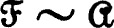, then A ∪ B is a member of . (See 2.I.)
; dually, if A and B are members of 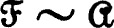, then A ∪ B is a member of . (See 2.I.)
(b) For each point x of X let ϕ(x) = {A: A ε  and x ε A}. Then ϕ is a one-to-one map of X into w(X).
and x ε A}. Then ϕ is a one-to-one map of X into w(X).
(c) For each open subset U of X let  and A ⊂ U for some A in
and A ⊂ U for some A in  }. Then 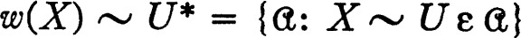. If U and V are open subsets of X, then (U ∩ V)* = U*∩V* and (U ∪ V)* = U* ∪ V*.
}. Then 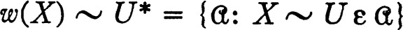. If U and V are open subsets of X, then (U ∩ V)* = U*∩V* and (U ∪ V)* = U* ∪ V*.
(d) Let w(X) have the topology with a base the family of all sets of the form U* for U open in X. Then w(X) is compact, the map ϕ is continuous, and ϕ(X) is dense in w(X). (Show compactness via the finite intersection property argument for complements of members of the base.)
(e) If X is normal, then w(X) is Hausdorff.
(f) If f is a bounded continuous real-valued function on X, then f ∘ ϕ–1 may be extended continuously to all of w(X). (If a continuous extension is impossible, then by a little argument it can be shown that there are closed disjoint subsets R and S of the reals such that f–1[R] and f–1[S] are disjoint but the closures of the images under ϕ of these sets intersect. But if A and B are closed disjoint subsets of X, then 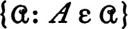 and 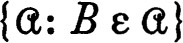 are disjoint and closed in w(X).)
(g) If w(X) is Hausdorff, then the Wallman compactification is topologically equivalent to the Stone-Čech compactification. (See 5.P.)
Notes The principal virtue of the Wallman compactification (Wallman [1]) lies in the fact that the correspondence carrying U into U* preserves finite intersections and unions. Moreover, the topology for X is carried onto a base for the topology for w(X) by the correspondence, and from this fact it follows that the dimension of X (in the covering sense) and the dimension of w(X) are identical, and X and w(X) have isomorphic Čech homology groups. See Samuel [1] for a related construction.
SBOOLEAN RINGS: STONE REPRESENTATION THEOREM
Let (R,+,·) be a Boolean ring (see 2.K), let S′ be the set of all ring homomorphisms of R into I2 (= the integers mod 2), and let S = S′ ~ {0}, where 0 is the homomorphism which is identically zero. Then S′ is a subset of the product I2R. The Stone space of the ring R is S with the relative product topology (I2 is assigned the discrete topology).
A Boolean space is a Hausdorff space such that the family of all sets which are both compact and open is a base for the topology. A Boolean space is automatically locally compact. The characteristic ring of a Boolean space is the ring of all continuous functions f into I2 such that f–1 [1] is compact (that is, all functions to I2 which vanish outside a compact set; sometimes called functions with a compact support).
(a) The Stone space of a Boolean ring R is a Boolean space and is compact whenever R has a unit. (In this case S = {h: h ε S′ and h(1) = 1}.)
(b) Stone-Weierstrass mod 2 Let  be the characteristic ring of a Boolean space X and let
be the characteristic ring of a Boolean space X and let  be a subring of
be a subring of  which has the two point property (that is, for distinct points x and y of X and for a and b in I2 there is g in
which has the two point property (that is, for distinct points x and y of X and for a and b in I2 there is g in  such that g(x) = a and g(y) = b). Then 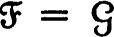.
such that g(x) = a and g(y) = b). Then 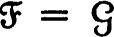.
(If X is compact, then  has the two point property whenever and
has the two point property whenever and  distinguishes points, in the sense that for distinct points x and y of X there is g in
distinguishes points, in the sense that for distinct points x and y of X there is g in  such that g(x) ≠ g(y). A routine but instructive compactness argument serves to establish (b). One might begin by showing that for a compact subset Y of X and a point x of X ~ Y there is g in
such that g(x) ≠ g(y). A routine but instructive compactness argument serves to establish (b). One might begin by showing that for a compact subset Y of X and a point x of X ~ Y there is g in  such that g(x) =0 and g on Y is one.)
such that g(x) =0 and g on Y is one.)
(c) Representation theorem Each Boolean ring is isomorphic (under the evaluation map) to the characteristic ring of its Stone space. (For r in R the evaluation at r, e(r), is the function on S whose value at a member s of S is s(r). This theorem depends on the existence of enough homomorphisms 2.K and the foregoing proposition (b).)
(d) If X is a Boolean space,  its characteristic ring, and
its characteristic ring, and  a maximal proper ideal in
a maximal proper ideal in  , then
, then  = {f: f(x) = 0} for some x in X. (Show first that unless there is a point at which all members of
= {f: f(x) = 0} for some x in X. (Show first that unless there is a point at which all members of  vanish, then .)
vanish, then .)
(e) Dual representation theorem If X is a Boolean space, then X is homeomorphic (under the evaluation map) to the Stone space of its characteristic ring. (A maximal ideal is the set of zeros of a unique homomorphism into I2 and every such set of zeros is a maximal ideal. The preceding proposition (d) shows essentially that the evaluation map carries X onto the Stone space.)
Notes The results above are due to M. H. Stone [3].
There is an interesting variation of the process of representing a Boolean space. If X is a Boolean space let  be the ring of all continuous functions on X to I2. (The requirement that f–1[1] be compact is omitted.) The evaluation map of X into the Stone space S of
be the ring of all continuous functions on X to I2. (The requirement that f–1[1] be compact is omitted.) The evaluation map of X into the Stone space S of  turns out to be a homeomorphism again, but S is compact and it is, in fact, homeomorphic to the Stone-Čech compactification β(X). We omit the proof of this fact as well as the characterizations of ideals and subrings of a Boolean ring in terms of the Stone space.
turns out to be a homeomorphism again, but S is compact and it is, in fact, homeomorphic to the Stone-Čech compactification β(X). We omit the proof of this fact as well as the characterizations of ideals and subrings of a Boolean ring in terms of the Stone space.
Finally, this problem is so arranged that the pattern can be transferred to the algebra of all continuous real-valued functions f on a locally compact Hausdorff space X such that, for e > 0, {x: |f(x)| ≧ e} is compact. The most difficult step in reproducing the pattern is the Stone-Weierstrass theorem, 7.R, of which (b) above is a miniature. It also turns out that, if X is a Tychonoff space, then the space of all real homomorphisms of the algebra of bounded continuous functions on X is homeomorphic to β(X), very much like the situation sketched in the previous paragraph.
TCOMPACT CONNECTED SPACES (THE CHAIN ARGUMENT)
Let (X,d) be a compact pseudo-metric space. For each positive number e, define an e-chain from a point x of X to a point y to be a finite sequence of points, the first of which is x, the last y, such that the distance between successive points is less than e. For each subset A of X, Ce(A) is defined to be the set of all points which can be joined to points of A by an e-chain and C(A) is defined to be . An equivalent definition: Let V0(A) = A, V1(A) = {x: dist (x,A) < e) and inductively Vn+1(A) = V1(Vn(A)). Set .
(a) For each e > 0 and each set A the set Ce(A) is open and closed.
(b) If A is a connected subset of X, then C(A) is connected. Hence C({x}) is the component Cx of X about x for each point x. (If C(A) is the union of disjoint closed sets B and D let f = [dist (B,D)]/3 and show by 5.G that Ce(A) ⊂ {x: dist (x,B ∪ D) < f) for some positive e.)
(c) If A is a subset of X, then . (If , then for some positive e.)
(d) The decomposition of X into components is upper semi-continuous.
(e) If X is connected and U is an open neighborhood of a point x, then the closure of some component of U intersects X ~ U. (If not, there is a compact neighborhood V of the closure of the component which is contained in U. The component about x of V is contained in the interior V0 of V and using (c) one can show that there are open and closed subsets of V containing V ~ V0 and x respectively.)
(f) No closed connected subset of X which contains more than one point is the union of a countable disjoint family of closed subsets. (Proposition (e) plays a critical role in this proof. If the set is closed and connected and the sets An are closed and disjoint it is possible to find a closed connected set which is disjoint from A1 and intersects more than one of the sets An.)
(g) Let X be the subset {(x,y): x2y2 = 1} of the Euclidean plane with the usual metric. Then X is locally compact and any two points can be joined by an e-chain for each e > 0, but X is not connected.
Notes The results of this problem generalize very naturally to compact Hausdorff (or compact regular) spaces. The even covering theorem 5.27 gives the necessary mechanism.
Lest proposition (e) make one over-optimistic on the properties of connected sets, the classic example of Knaster and Kuratowski [1] should be mentioned. There is a connected subspace X of the Euclidean plane and a point x of X such that X ~ {x} contains no connected set.
UFULLY NORMAL SPACES
If  is a family of subsets of a set X and x is a point of X, then the star at x of
is a family of subsets of a set X and x is a point of X, then the star at x of  is the union of the members of
is the union of the members of  to which x belongs. A cover
to which x belongs. A cover  is a star-refinement of
is a star-refinement of  iff the family of stars of
iff the family of stars of  at points of X is a refinement of
at points of X is a refinement of  . A topological space is fully normal iff each open cover has an open star-refinement. Then: A regular topological space is fully normal iff it is paracompact. (If X is paracompact the even covering property together with 5.30 yields an easy proof of full normality. On the other hand, if X is fully normal,
. A topological space is fully normal iff each open cover has an open star-refinement. Then: A regular topological space is fully normal iff it is paracompact. (If X is paracompact the even covering property together with 5.30 yields an easy proof of full normality. On the other hand, if X is fully normal,  is an open cover and
is an open cover and  is an open star-refinement of
is an open star-refinement of  , then is a neighborhood of the diagonal.)
, then is a neighborhood of the diagonal.)
Note The definition of full normality is due to J. W. Tukey [1], who proved many useful properties. The equivalence with paracompactness was proved by A. H. Stone [1].
VPOINT FINITE COVERS AND METACOMPACT SPACES
A family of subsets of X is point finite iff no point of X belongs to more than a finite number of members of the family. A topological space is metacompact iff each open cover has a point finite refinement.
(a) Let  be a point finite open cover of a normal space X. Then it is possible to select an open set G(U) for each U in
be a point finite open cover of a normal space X. Then it is possible to select an open set G(U) for each U in  in such a way that G(U)– ⊂ U and the family of all sets G(U) is a cover of X. (Choose a maximal member of the class of all functions F satisfying the conditions: the domain of F is a subfamily of
in such a way that G(U)– ⊂ U and the family of all sets G(U) is a cover of X. (Choose a maximal member of the class of all functions F satisfying the conditions: the domain of F is a subfamily of  F(U) is an open set whose closure is contained in U for each U in the domain of F and : U ε domain F} . Point finiteness of
F(U) is an open set whose closure is contained in U for each U in the domain of F and : U ε domain F} . Point finiteness of  implies the existence of a maximal F.)
implies the existence of a maximal F.)
(b) A point finite cover of a set has a minimal subcover (that is, a subcover no proper subfamily of which is a cover).
(c) A metacompact T1-space is countably compact (see 5.E) iff it is compact.
Note Propositions (b) and (c) are taken directly from Arens and Dugundji [1].
WPARTITION OF UNITY
A partition of unity on a topological space X is a family F of continuous functions on X to the set of non-negative real numbers such that for each x in X, and all but a finite number of members of F vanish on some neighborhood of each point of X. A partition F of unity is subordinate to a cover  of X iff each member of F vanishes outside some member of
of X iff each member of F vanishes outside some member of  . Then: For each locally finite open cover
. Then: For each locally finite open cover  of a normal space there is a partition of unity which is subordinate to
of a normal space there is a partition of unity which is subordinate to  . A slightly stronger result may be proved: If
. A slightly stronger result may be proved: If  is a locally finite open cover of a normal space, then it is possible to select a non-negative continuous function fU for each U in
is a locally finite open cover of a normal space, then it is possible to select a non-negative continuous function fU for each U in  such that fU is 0 outside U and is everywhere less than or equal to one, and for all x. (See 5.V(a) above.)
such that fU is 0 outside U and is everywhere less than or equal to one, and for all x. (See 5.V(a) above.)
Note As far as I know, this result (approximately) is due independently to Hurewicz, Bochner, and Dieudonné.
XTHE BETWEEN THEOREM FOR SEMI-CONTINUOUS FUNCTIONS
Let g and h be, respectively, lower and upper semi-continuous real-valued functions on a paracompact space X, and suppose that h(x) < g(x) for all x in X. Then there is a continuous real-valued function p on X such that h(x) < p(x) < g(x) for each x. (Let  be the family of all open subsets U of X such that the supremum of h on U is less than the infimum of g on U, and let F be a partition of unity which is subordinate to
be the family of all open subsets U of X such that the supremum of h on U is less than the infimum of g on U, and let F be a partition of unity which is subordinate to  . For each f in F choose kf such that, if f(x) ≠ 0, then h(x) < kf < g(x), and let . The value of p at a point x is then an average of numbers, all of which lie between h(x) and g(x).)
. For each f in F choose kf such that, if f(x) ≠ 0, then h(x) < kf < g(x), and let . The value of p at a point x is then an average of numbers, all of which lie between h(x) and g(x).)
Notes The result above can be improved by first finding a countable refinement for the family  . The proposition then holds for countably paracompact spaces (that is, spaces such that each countable open cover has a locally finite refinement). The converse of the sharpened form of the theorem is true. Dowker [2] has proved the equivalence of: (1) X is countably paracompact and normal, (2) the product of X and the closed unit interval is normal, and (3) the proposition above. Dowker also shows that a perfectly normal space (normal and each closed subset is a Gδ) is countably paracompact. It is not known whether a normal Hausdorff space must be countably paracompact.
. The proposition then holds for countably paracompact spaces (that is, spaces such that each countable open cover has a locally finite refinement). The converse of the sharpened form of the theorem is true. Dowker [2] has proved the equivalence of: (1) X is countably paracompact and normal, (2) the product of X and the closed unit interval is normal, and (3) the proposition above. Dowker also shows that a perfectly normal space (normal and each closed subset is a Gδ) is countably paracompact. It is not known whether a normal Hausdorff space must be countably paracompact.
YPARACOMPACT SPACES
(a) Each regular Lindelöf space is paracompact.
(b) A topological space is defined to be σ-compact iff it is the union of a countable family of compact subsets. Each σ-compact space is a Lindelöf space.
(c) If a regular space is the union of the members of an open discrete family of Lindelöf subspaces, then it is paracompact. Consequently each locally compact group is paracompact. (Consider the family of cosets modulo the smallest subgroup containing a fixed compact neighborhood of the identity.)
(d) The half-open interval space of problems 1.K and 4.1 is regular and Lindelöf and hence paracompact. The cartesian product of this space with itself is not normal and is therefore not paracompact.
(e) With the order topology the set of all ordinals which are less than the first uncountable ordinal is not paracompact. (Consider the cover consisting of all sets of the form {x: x < a}. The supremum of each member of an arbitrary refinement of this cover is less than Ω.)
Notes Proposition (a) above is due to Morita [1]. For further information on paracompactness (an Fσ-theorem, products, etc.) see Michael [1]. Bing [1] has studied a normality condition which is intermediate to normality and paracompactness. In this connection it might be emphasized that lemma 5.31 states a noteworthy normality property of paracompact spaces.
* The term “compact” has also been used to denote “sequentially compact” and “countably compact” (in the terminology of the problems at the end of this chapter). N. Bourbaki and his colleagues reserve the term “compact” for compact Hausdorff spaces.
* Problem 2.1 is precisely the result needed here.
* We are evidently reproving part of proposition 2.1.
* This definition is actually incomplete until ∞ is defined. Any element which is not a member of X, for example X, will do.
* The usual definition of paracompact specifies “Hausdorff” instead of “regular.” It is not hard to show that a Hausdorff space is regular if each open cover has an open locally finite refinement.
* This curious property of Ω0 has been used by E. Hewitt [1] in constructing a regular Hausdorff space X such that every continuous real-valued function on X is constant.